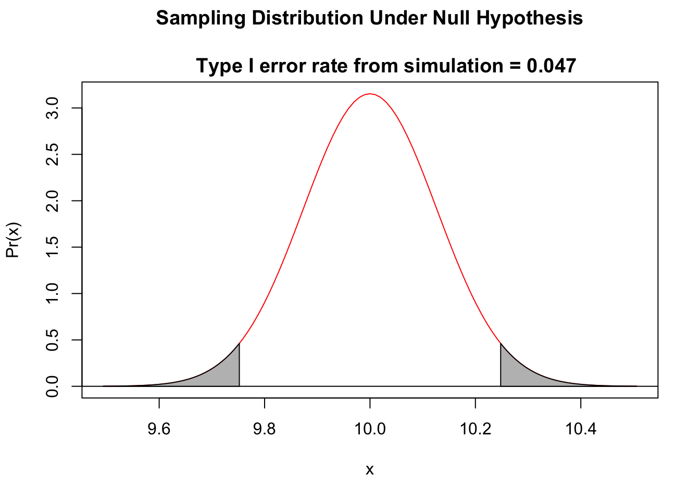
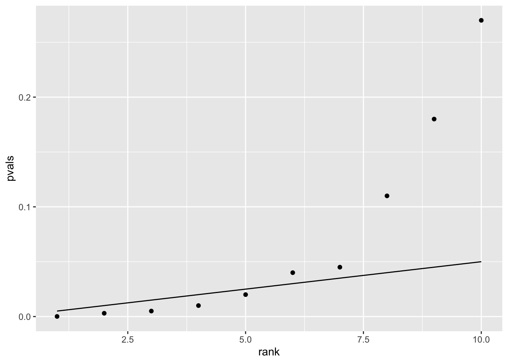
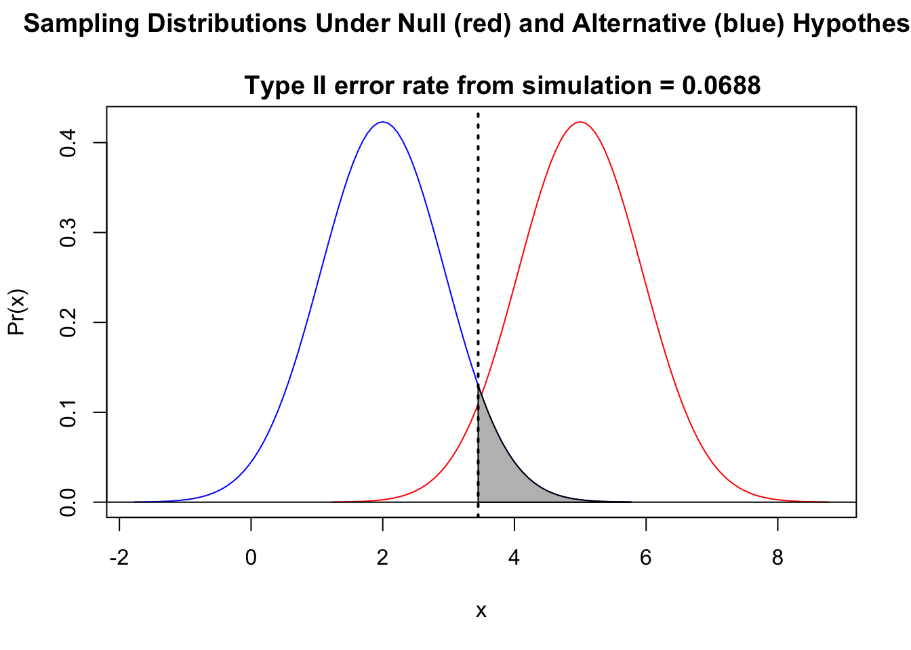
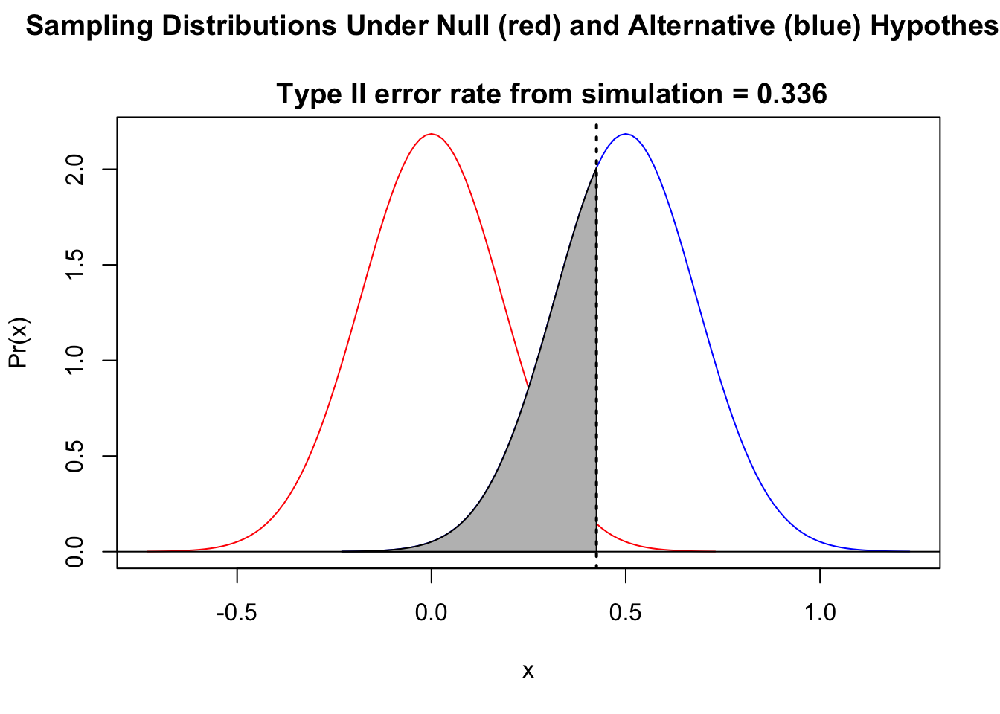

17 Error, Power, and Effect Size
17.1 Objectives
The objective of this module is to discuss the concepts of Type I and Type II error, the multiple testing problem, statistical power, and effect size and outline how we can use R to investigate these via simulation and built-in functions.
17.2 Preliminaries
- Load {tidyverse} and {manipulate}
17.3 Overview
Let’s return to the concepts of error and power. Recall that Type I error occurs when you incorrectly reject a true \(H_0\). In any given hypothesis test, the probability of a Type I error is equivalent to the significance level, \(\alpha\), and it is this type of error we are often trying to minimize when we are doing classical statistical inference. Type II error occurs when you incorrectly fail to reject a false \(H_0\) (in other words, fail to find evidence in support of a true \(H_A\)). Since we do not know what the true \(H_A\) actually is, the probability of committing such an error, labeled \(\beta\), is not usually known in practice.
| What is True | What We Decide | Result |
|---|---|---|
| \(H_0\) | \(H_0\) | Correctly ‘accept’ the null |
| \(H_0\) | \(H_A\) | Falsely reject the null (Type I error) |
| \(H_A\) | \(H_0\) | Falsely ‘accept’ the null (Type II error) |
| \(H_A\) | \(H_A\) | Correctly reject the null |
17.4 Type I Error and Multiple Testing
Because of how we define \(\alpha\), the chance probability of falsely rejecting \(H_0\) when \(H_0\) is actually true, we would expect to find some “significant” results if we run enough independent hypothesis tests. For example, if we set \(\alpha\) at 0.05, we would expect to find one “significant” result in roughly every 20 tests we run, just by chance. The relation of \(\alpha\) to the distribution of a variable under a null hypothesis (\(\mu\) = \(\mu_0\)) versus an alternative hypothesis (e.g., \(\mu\) > \(\mu_0\)) is shown in the figure below (this example is for an upper one-tailed test). It should be clear that we can reduce the chance of Type I error by decreasing \(\alpha\) (shifting the critical value to the right in the \(H_0\) distribution). Type I error will also be reduced as the means get further apart or as the standard deviation of the distributions shrinks.
Let’s explore this via simulation.
We will write some code to simulate a bunch of random datasets from a normal distribution where we set the expected population mean (\(\mu_0\)) and standard deviation (\(\sigma\)) and then calculate a \(Z\) (or \(T\)) statistic and p value for each one. We will then look at the “Type I” error rate… the proportion of times that, based on our sample, we would conclude that it was not drawn from the distribution we know to be true.
First, let’s set up a skeleton function we will call typeI() to evaluate the Type I error rate. It should take, as arguments, the parameters of the normal distribution for the null hypothesis we want to simulate from (\(\mu_0\) and \(\sigma\)), our sample size, our \(\alpha\) level, what “alternative” type of \(Z\) (or \(T\)) test we want to do (“greater”, “less”, or “two.tailed”), and the number of simulated datasets we want to generate. Copy and paste in the code below (and note that we set default values for \(\alpha\) and the number of simulations). Note that we can use the “t” family of functions instead of the “norm” family.
# function skeleton
typeI <- function(mu0, sigma, n, alternative = "two.tailed", alpha = 0.05, k = 10000) {
}Now, we will add the body of the function.
typeI <- function(mu0, sigma, n, alternative = "two.tailed", alpha = 0.05, k = 10000) {
p <- rep(NA, k)
# set a vector of k empty p values, one for each simulation
for (i in 1:k) {
# sets up a loop to run k simulations
x <- rnorm(n = n, mean = mu0, sd = sigma)
# draws a sample of size n from our distribution
m <- mean(x) # calculates the mean
s <- sd(x) # calculates the standard deviation
z <- (m - mu0)/(s/sqrt(n))
# calculates the Z statistic for the sample drawn from the null
# distribution relative to the null distribution alternatively use t <-
# (m-mu0)/(s/sqrt(n))
if (alternative == "less") {
p[[i]] <- pnorm(z, lower.tail = TRUE)
# calculates the associated p value alternatively, use p[[i]] <-
# pt(t, df = n-1, lower.tail = TRUE)
}
if (alternative == "greater") {
p[[i]] <- pnorm(z, lower.tail = FALSE)
# calculates the associated p value alternatively, use p[[i]] <-
# pt(t, df = n-1, lower.tail=FALSE)
}
if (alternative == "two.tailed") {
if (z > 0) {
p[[i]] <- 2 * pnorm(z, lower.tail = FALSE)
}
# alternatively, use if (t > 0) {p[[i]] <- pt(t, df = n-1,
# lower.tail = FALSE)}
if (z < 0) {
p[[i]] <- 2 * pnorm(z, lower.tail = TRUE)
}
# alternatively, use if (t < 0) {p[[i]] <- pt(t, df = n-1,
# lower.tail = TRUE)}
}
}
curve(dnorm(x, mu0, sigma/sqrt(n)), mu0 - 4 * sigma/sqrt(n), mu0 + 4 * sigma/sqrt(n),
main = paste("Sampling Distribution Under Null Hypothesis\n
Type I error rate from simulation = ",
length(p[p < alpha])/k, sep = ""), xlab = "x", ylab = "Pr(x)", col = "red",
xlim = c(mu0 - 4 * sigma/sqrt(n), mu0 + 4 * sigma/sqrt(n)), ylim = c(0, dnorm(mu0,
mu0, sigma/sqrt(n))))
abline(h = 0)
if (alternative == "less") {
polygon(cbind(c(mu0 - 4 * sigma/sqrt(n), seq(from = mu0 - 4 * sigma/sqrt(n),
to = mu0 - qnorm(1 - alpha) * sigma/sqrt(n), length.out = 100), mu0 -
qnorm(1 - alpha) * sigma/sqrt(n))), c(0, dnorm(seq(from = mu0 - 4 * sigma/sqrt(n),
to = mu0 - qnorm(1 - alpha) * sigma/sqrt(n), length.out = 100), mean = mu0,
sd = sigma/sqrt(n)), 0), border = "black", col = "grey")
q <- pnorm(mu0 - qnorm(1 - alpha) * sigma/sqrt(n), mean = mu0, sd = sigma/sqrt(n)) -
pnorm(mu0 - 4 * sigma/sqrt(n), mean = mu0, sd = sigma/sqrt(n))
}
if (alternative == "greater") {
polygon(cbind(c(mu0 + qnorm(1 - alpha) * sigma/sqrt(n), seq(from = mu0 +
qnorm(1 - alpha) * sigma/sqrt(n), to = mu0 + 4 * sigma/sqrt(n), length.out = 100),
mu0 + 4 * sigma/sqrt(n))), c(0, dnorm(seq(from = mu0 + qnorm(1 - alpha) *
sigma/sqrt(n), to = mu0 + 4 * sigma/sqrt(n), length.out = 100), mean = mu0,
sd = sigma/sqrt(n)), 0), border = "black", col = "grey")
q <- pnorm(mu0 + 4 * sigma/sqrt(n), mean = mu0, sd = sigma/sqrt(n)) - pnorm(mu0 +
qnorm(1 - alpha) * sigma/sqrt(n), mean = mu0, sd = sigma/sqrt(n))
}
if (alternative == "two.tailed") {
polygon(cbind(c(mu0 - 4 * sigma/sqrt(n), seq(from = mu0 - 4 * sigma/sqrt(n),
to = mu0 - qnorm(1 - alpha/2) * sigma/sqrt(n), length.out = 100), mu0 -
qnorm(1 - alpha/2) * sigma/sqrt(n))), c(0, dnorm(seq(from = mu0 - 4 *
sigma/sqrt(n), to = mu0 - qnorm(1 - alpha/2) * sigma/sqrt(n), length.out = 100),
mean = mu0, sd = sigma/sqrt(n)), 0), border = "black", col = "grey")
polygon(cbind(c(mu0 + qnorm(1 - alpha/2) * sigma/sqrt(n), seq(from = mu0 +
qnorm(1 - alpha/2) * sigma/sqrt(n), to = mu0 + 4 * sigma/sqrt(n), length.out = 100),
mu0 + 4 * sigma/sqrt(n))), c(0, dnorm(seq(from = mu0 + qnorm(1 - alpha/2) *
sigma/sqrt(n), to = mu0 + 4 * sigma/sqrt(n), length.out = 100), mean = mu0,
sd = sigma/sqrt(n)), 0), border = "black", col = "grey")
q <- pnorm(mu0 - qnorm(1 - alpha/2) * sigma/sqrt(n), mean = mu0, sd = sigma/sqrt(n)) -
pnorm(mu0 - 4 * sigma/sqrt(n), mean = mu0, sd = sigma/sqrt(n)) + pnorm(mu0 +
4 * sigma/sqrt(n), mean = mu0, sd = sigma/sqrt(n)) - pnorm(mu0 + qnorm(1 -
alpha/2) * sigma/sqrt(n), mean = mu0, sd = sigma/sqrt(n))
}
# print(round(q,digits=3)) this prints area in the shaded portion(s) of the
# curve
return(length(p[p < alpha])/k)
# returns the proportion of simulations where p < alpha or
# `return(mean(p<alpha))`
}Here, \(\mu_0\) is our sample mean and \(\sigma\) is our sample standard deviation.
Can you explain what each step of this code is doing?
Now, run our Type I error test function with a couple of different values of \(\mu_0\), \(\sigma\), and \(\alpha\). What error rates are returned? They should be always be close to \(\alpha\)!
eI <- typeI(mu0 = -3, sigma = 2, n = 1000, alternative = "greater", alpha = 0.05)eI <- typeI(mu0 = 5, sigma = 2, n = 1000, alternative = "less", alpha = 0.01)eI <- typeI(mu0 = 10, sigma = 4, n = 1000, alternative = "two.tailed", alpha = 0.05)
CHALLENGE
How does the Type I error rate change with \(n\)? With \(\sigma\)? With \(\alpha\)?
HINT: It shouldn’t change much… the Type I error rate is defined by \(\alpha\)!
17.5 Multiple Comparison Corrections
One way we can address the multiple testing problem mentioned above is by using what is called the Bonferroni correction, which suggests that when doing a total of \(k\) independent hypothesis tests, each with a significance level of \(\alpha\), we should adjust the \(\alpha\) level we use to interpret statistical significance as follow: \(\alpha_B = \alpha/k\). For example, if we run 10 independent hypothesis tests, then we should set our adjusted \(\alpha\) level for each test as 0.05/10 = 0.005.
With the Bonferroni correction, we are essentially saying that we want to control the rate at which we have even one incorrect rejection of \(H_0\) given the entire family of tests we do. This is also referred to as limiting the “family-wise error rate” to level \(\alpha\).
# example Bonferroni correction
alpha <- 0.05
pvals <- c(1e-04, 0.003, 0.005, 0.01, 0.02, 0.04, 0.045, 0.11, 0.18, 0.23)
# vector of p values associated with a set of tests
sig <- pvals <= alpha/length(pvals)
# returns a boolean vector of pvals less than or equal to the adjusted alpha
sig # first 3 values are less than the adjusted alpha## [1] TRUE TRUE TRUE FALSE FALSE FALSE FALSE FALSE FALSE FALSEMany statisticians consider the Bonferroni correction to be an overly conservative one, and there are other corrections we might use to account for multiple testing.
One common alternative is the Benjamini & Hochberg correction, which is less conservative. It attempts to control for the “false discovery rate”, which is different than the “family-wise error rate”. Here, we aim to limit the number of false “discoveries” (i.e., incorrect rejections of the null hypothesis) out of a set of discoveries (i.e., out of the set of results where we would reject the null hypothesis) to \(\alpha\).
- Calculate \(p\) values for all tests
- Order \(p\) values from smallest to largest (from \(p_1\) to \(p_m\))
- Call any \(p\) value where \(p_i ≤ \alpha \times i/m\) significant
alpha <- 0.05
psig <- NULL
pvals <- c(1e-04, 0.003, 0.005, 0.01, 0.02, 0.04, 0.045, 0.11, 0.18, 0.27)
for (i in 1:length(pvals)) {
psig[i] <- alpha * i/length(pvals)
}
d <- tibble(rank = c(1:10), pvals = pvals, psig = psig)
p <- ggplot(data = d, aes(x = rank, y = pvals)) + geom_point() + geom_line(aes(x = rank,
y = psig))
p
sig <- pvals <= psig # vector of significant pvalues
sig # first 5 values are less than the adjusted alpha, the remaining are not## [1] TRUE TRUE TRUE TRUE TRUE FALSE FALSE FALSE FALSE FALSEAn alternative way of thinking about this is to adjust p values themselves rather than the \(\alpha\) levels. We can do this with a built-in R function, p.adjust(), which makes the calculation easy. Using this function, we can specify the kind of correction method we want to apply.
sig <- p.adjust(pvals, method = "bonferroni") <= 0.05
sig # first 3 adjusted p values are less alpha## [1] TRUE TRUE TRUE FALSE FALSE FALSE FALSE FALSE FALSE FALSEsig <- p.adjust(pvals, method = "BH") <= 0.05
sig # first 5 adjusted p values are less alpha## [1] TRUE TRUE TRUE TRUE TRUE FALSE FALSE FALSE FALSE FALSE17.6 Type II Error
By reducing the \(\alpha\) level we use as our criterion for statistical significance, we can reduce the chance of committing a Type I error (i.e., of incorrectly rejecting a true null hypothesis)… but doing so directly increases our chance of committing a Type II error (i.e., of incorrectly failing to reject a false null). The shaded area in the figure below, \(\beta\), is the probability of incorrectly failing to reject the null…

It should be clear from this figure that if the critical value (which, again, is defined by \(\alpha\)) is shifted to the right (i.e., if we reduce \(\alpha\)), or if \(\mu\) under the alternative hypothesis shifts left, then \(\beta\), the area under the alternative hypothesis distribution curve to the left of the critical value, increases! Intuitively, this makes sense: the lower the difference between the true \(\mu_A\) value and \(\mu_0\) and/or the higher the \(\alpha\) level, the harder it will be to reject the null hypothesis that \(\mu\) = \(\mu_0\).
In practice, we cannot usually calculate \(\beta\) because of the need to know where the true distribution is really centered (i.e., we need to know the value of \(\mu_A\), which is often unknown). However, we can explore via simulation what \(\beta\) is expected to look like under different alternative hypotheses (e.g., under different \(\mu_A\)) and under different sample sizes and \(\alpha\) levels.
Let’s do this using the simulation approach we developed above. Again, we will write some code to simulate a bunch of random datasets, this time drawn from a normal distribution associated with a particular alternative hypothesis, \(H_A\), that we define… i.e., where we specify \(\mu_A\) and \(\sigma\), i.e., a mean and a standard deviation. We then calculate a \(Z\) (or \(T\)) statistic based on each sample dataset relative to \(\mu_0\), the expected mean under \(H_0\), and determine the associated p value for each one. Based on this, we can calculate the Type II error rate… the proportion of times that, based on our sample, we would conclude that it was drawn from the \(H_0\) distribution rather than the \(H_A\) distribution that we set to be true. Note that, as above, we can use the “t” family of functions in lieu of the “norm” family.
typeII <- function(mu0, muA, sigma, n, alternative = "two.tailed", alpha = 0.05,
k = 10000) {
p <- rep(NA, k) # sets up a vector of empty p values
for (i in 1:k) {
x <- rnorm(n = n, mean = muA, sd = sigma)
# draw a sample of size n from Ha
m <- mean(x)
s <- sd(x)
z <- (m - mu0)/(s/sqrt(n))
# calculates the Z statistic for the sample drawn from Ha relative to
# the null distribution or... t <- (m-mu0)/(s/sqrt(n)) # calculates the
# t statistic
if (alternative == "greater") {
p[[i]] <- pnorm(z, lower.tail = FALSE)
# calculates the associated p value for the Z statistic or...
# p[[i]] <- pt(t,lower.tail=FALSE,df=n-1) calculates the associated
# p value for the t statistic
hyp <- "muA > mu0"
}
if (alternative == "less") {
p[[i]] <- pnorm(z, lower.tail = TRUE)
# or... p[[i]] <- pt(t, lower.tail = TRUE, df = n - 1)
hyp <- "muA < mu0"
}
if (alternative == "two.tailed") {
if (z > 0) {
p[[i]] <- 2 * pnorm(z, lower.tail = FALSE)
}
if (z < 0) {
p[[i]] <- 2 * pnorm(z, lower.tail = TRUE)
}
# if (t > 0) {p[[i]] <- 2 * pt(t, lower.tail = FALSE, df = n-1)} if
# (t < 0) {p[[i]] <- 2 * pt(t, lower.tail = TRUE, df = n-1)}
hyp <- "muA ≠ mu0"
}
}
curve(dnorm(x, mu0, sigma/sqrt(n)), mu0 - 4 * sigma/sqrt(n), mu0 + 4 * sigma/sqrt(n),
main = paste("Sampling Distributions Under Null (red) and Alternative (blue) Hypotheses\n
Type II error rate from simulation = ",
length(p[p >= alpha])/k, sep = ""), xlab = "x", ylab = "Pr(x)", col = "red",
xlim = c(min(c(mu0 - 4 * sigma/sqrt(n), muA - 4 * sigma/sqrt(n))), max(c(mu0 +
4 * sigma/sqrt(n), muA + 4 * sigma/sqrt(n)))), ylim = c(0, max(c(dnorm(mu0,
mu0, sigma/sqrt(n))), dnorm(muA, muA, sigma/sqrt(n)))))
curve(dnorm(x, muA, sigma/sqrt(n)), muA - 4 * sigma/sqrt(n), muA + 4 * sigma/sqrt(n),
col = "blue", add = TRUE)
abline(h = 0)
if (alternative == "less") {
polygon(cbind(c(mu0 - qnorm(1 - alpha) * sigma/sqrt(n), seq(from = mu0 -
qnorm(1 - alpha) * sigma/sqrt(n), to = muA + 4 * sigma/sqrt(n), length.out = 100),
muA + 4 * sigma/sqrt(n))), c(0, dnorm(seq(from = mu0 - qnorm(1 - alpha) *
sigma/sqrt(n), to = muA + 4 * sigma/sqrt(n), length.out = 100), mean = muA,
sd = sigma/sqrt(n)), 0), border = "black", col = "grey")
abline(v = mu0 - qnorm(1 - alpha) * sigma/sqrt(n), col = "black", lty = 3,
lwd = 2)
}
if (alternative == "greater") {
polygon(cbind(c(muA - 4 * sigma/sqrt(n), seq(from = muA - 4 * sigma/sqrt(n),
to = mu0 + qnorm(1 - alpha) * sigma/sqrt(n), length.out = 100), mu0 +
qnorm(1 - alpha) * sigma/sqrt(n))), c(0, dnorm(seq(from = muA - 4 * sigma/sqrt(n),
to = mu0 + qnorm(1 - alpha) * sigma/sqrt(n), length.out = 100), mean = muA,
sd = sigma/sqrt(n)), 0), border = "black", col = "grey")
abline(v = mu0 + qnorm(1 - alpha) * sigma/sqrt(n), col = "black", lty = 3,
lwd = 2)
}
if (alternative == "two.tailed") {
abline(v = mu0 - qnorm(1 - alpha/2) * sigma/sqrt(n), col = "black", lty = 3,
lwd = 2)
abline(v = mu0 + qnorm(1 - alpha/2) * sigma/sqrt(n), col = "black", lty = 3,
lwd = 2)
if (z > 0) {
# greater
polygon(cbind(c(muA - 4 * sigma/sqrt(n), seq(from = muA - 4 * sigma/sqrt(n),
to = mu0 + qnorm(1 - alpha/2) * sigma/sqrt(n), length.out = 100),
mu0 + qnorm(1 - alpha/2) * sigma/sqrt(n))), c(0, dnorm(seq(from = muA -
4 * sigma/sqrt(n), to = mu0 + qnorm(1 - alpha/2) * sigma/sqrt(n),
length.out = 100), mean = muA, sd = sigma/sqrt(n)), 0), border = "black",
col = "grey")
}
if (z < 0) {
# less
polygon(cbind(c(mu0 - qnorm(1 - alpha/2) * sigma/sqrt(n), seq(from = mu0 -
qnorm(1 - alpha/2) * sigma/sqrt(n), to = muA + 4 * sigma/sqrt(n),
length.out = 100), muA + 4 * sigma/sqrt(n))), c(0, dnorm(seq(from = mu0 -
qnorm(1 - alpha/2) * sigma/sqrt(n), to = muA + 4 * sigma/sqrt(n),
length.out = 100), mean = muA, sd = sigma/sqrt(n)), 0), border = "black",
col = "grey")
}
}
return(length(p[p >= alpha])/k)
}CHALLENGE
Explore this function using different values of \(\mu_0\), \(\sigma\), \(n\), and different types of one- and two-tailed tests.
eII <- typeII(mu0 = 5, muA = 2, sigma = 4, n = 18, alternative = "less")
# Ha < H0
eII <- typeII(mu0 = 5, muA = 7, sigma = 2, n = 15, alternative = "two.tailed")# Ha ≠ H0
eII <- typeII(mu0 = 0, muA = 0.5, sigma = 1, n = 30, alternative = "greater", alpha = 0.01)
# Ha ≠ H0- What happens if you increase \(\sigma\) keeping other values constant?
- What happens if you reduce \(n\) or increase \(n\)?
- What happens if you increase the difference between \(\mu_A\) and \(\mu_0\)?
17.7 Power and Effect Size
Power is the probability of correctly rejecting a null hypothesis that is untrue. For a test that has a Type II error rate of \(\beta\), the statistical power is defined, simply, as \(1-\beta\). Power values of 0.8 or greater are conventionally considered to be “high”. Power for any given test depends on the difference in means between groups or treatments, \(\alpha\), \(n\), and \(\sigma\).
Generally speaking, effect size is a quantitative measure of the strength of a phenomenon. Here, we are interested in comparing two sample means, and the most common way to describe the effect size is as a standardized difference between the means of the groups being compared. In this case, we divide the absolute values of the difference between the means by the standard deviation: \(\frac{\vert(\mu_0 - \mu_A)\vert}{\sigma}\). This results in a scaleless measure. Conventionally, effect sizes of 0.2 or less are considered to be low and of 0.8 or greater are considered to be high.
17.8 Visualizing Power and Effect Size
The code below lets you explore power and effect size interactively. You can use the sliders to set \(\mu_0\) and \(\mu_A\) for a one-sample test (or, alternatively, think about these as \(\mu_1\) and \(\mu_2\) for a two-sample test), \(\sigma\), \(\alpha\), and \(n\), and you can choose whether you are testing a one-sided hypothesis of \(\mu_A\) being “greater” or “less” than \(\mu_0\) or are testing the two-sided hypothesis that \(\mu_A\) ≠ \(\mu_0\) (“two.tailed”). The figure will output power and effect size. Note that \(n\) is the number of observations (or differences) being considered and \(\sigma\) is the standard deviation in the observation (or difference values).
First, we define a function that plots the relationship between these factors and power:
power.plot <- function(mu0, muA, n, sigma, alpha, alternative = "two.tailed") {
pow <- 0
z <- (muA - mu0)/(sigma/sqrt(n))
g <- ggplot(data.frame(mu = c(min(mu0 - 4 * sigma/sqrt(n), muA - 4 * sigma/sqrt(n)),
max(mu0 + 4 * sigma/sqrt(n), muA + 4 * sigma/sqrt(n)))), aes(x = mu)) + ggtitle(paste0("Explore Power and Effect Size for Z Test
for a sample of size ",
n))
g <- g + ylim(c(0, max(dnorm(mu0, mu0, sigma/sqrt(n)) + 0.1, dnorm(muA, muA,
sigma/sqrt(n)) + 0.1)))
g <- g + stat_function(fun = dnorm, geom = "line", args = list(mean = mu0, sd = sigma/sqrt(n)),
size = 1, col = "red", show.legend = TRUE)
g <- g + stat_function(fun = dnorm, geom = "line", args = list(mean = muA, sd = sigma/sqrt(n)),
size = 1, col = "blue", show.legend = TRUE)
if (alternative == "greater") {
if (z > 0) {
xcrit = mu0 + qnorm(1 - alpha) * sigma/sqrt(n)
g <- g + geom_segment(x = xcrit, y = 0, xend = xcrit, yend = max(dnorm(mu0,
mu0, sigma/sqrt(n)) + 0.025, dnorm(muA, muA, sigma/sqrt(n)) + 0.025),
size = 0.5, linetype = 3)
g <- g + geom_polygon(data = data.frame(cbind(x = c(xcrit, seq(from = xcrit,
to = muA + 4 * sigma/sqrt(n), length.out = 1000), muA + 4 * sigma/sqrt(n)),
y = c(0, dnorm(seq(from = xcrit, to = muA + 4 * sigma/sqrt(n), length.out = 1000),
mean = muA, sd = sigma/sqrt(n)), 0))), aes(x = x, y = y), fill = "blue",
alpha = 0.5)
pow <- pnorm(muA + 4 * sigma/sqrt(n), muA, sigma/sqrt(n)) - pnorm(xcrit,
muA, sigma/sqrt(n))
}
}
if (alternative == "less") {
if (z < 0) {
xcrit = mu0 - qnorm(1 - alpha) * sigma/sqrt(n)
g <- g + geom_segment(x = xcrit, y = 0, xend = xcrit, yend = max(dnorm(mu0,
mu0, sigma/sqrt(n)) + 0.025, dnorm(muA, muA, sigma/sqrt(n)) + 0.025),
size = 0.5, linetype = 3)
g <- g + geom_polygon(data = data.frame(cbind(x = c(muA - 4 * sigma/sqrt(n),
seq(from = muA - 4 * sigma/sqrt(n), to = xcrit, length.out = 1000),
xcrit), y = c(0, dnorm(seq(from = muA - 4 * sigma/sqrt(n), to = xcrit,
length.out = 1000), mean = muA, sd = sigma/sqrt(n)), 0))), aes(x = x,
y = y), fill = "blue", alpha = 0.5)
pow <- pnorm(xcrit, muA, sigma/sqrt(n)) - pnorm(muA - 4 * sigma/sqrt(n),
muA, sigma/sqrt(n))
}
}
if (alternative == "two.tailed") {
if (z > 0) {
xcrit = mu0 + qnorm(1 - alpha/2) * sigma/sqrt(n)
g <- g + geom_segment(x = xcrit, y = 0, xend = xcrit, yend = max(dnorm(mu0,
mu0, sigma/sqrt(n)) + 0.025, dnorm(muA, muA, sigma/sqrt(n)) + 0.025),
size = 0.5, linetype = 3)
g <- g + geom_polygon(data = data.frame(cbind(x = c(xcrit, seq(from = xcrit,
to = muA + 4 * sigma/sqrt(n), length.out = 1000), muA + 4 * sigma/sqrt(n)),
y = c(0, dnorm(seq(from = xcrit, to = muA + 4 * sigma/sqrt(n), length.out = 1000),
mean = muA, sd = sigma/sqrt(n)), 0))), aes(x = x, y = y), fill = "blue",
alpha = 0.5)
pow <- pnorm(muA + 4 * sigma/sqrt(n), muA, sigma/sqrt(n)) - pnorm(xcrit,
muA, sigma/sqrt(n))
}
if (z < 0) {
xcrit = mu0 - qnorm(1 - alpha/2) * sigma/sqrt(n)
g <- g + geom_segment(x = xcrit, y = 0, xend = xcrit, yend = max(dnorm(mu0,
mu0, sigma/sqrt(n)) + 0.025, dnorm(muA, muA, sigma/sqrt(n)) + 0.025),
size = 0.5, linetype = 3)
g <- g + geom_polygon(data = data.frame(cbind(x = c(muA - 4 * sigma/sqrt(n),
seq(from = muA - 4 * sigma/sqrt(n), to = xcrit, length.out = 1000),
xcrit), y = c(0, dnorm(seq(from = muA - 4 * sigma/sqrt(n), to = xcrit,
length.out = 1000), mean = muA, sd = sigma/sqrt(n)), 0))), aes(x = x,
y = y), fill = "blue", alpha = 0.5)
pow <- pnorm(xcrit, muA, sigma/sqrt(n)) - pnorm(muA - 4 * sigma/sqrt(n),
muA, sigma/sqrt(n))
}
}
g <- g + annotate("text", x = max(mu0, muA) + 2 * sigma/sqrt(n), y = max(dnorm(mu0,
mu0, sigma/sqrt(n)) + 0.075, dnorm(muA, muA, sigma/sqrt(n)) + 0.075), label = paste("Effect Size = ",
round(abs((muA - mu0))/sigma, digits = 3), "\nPower = ", round(pow, digits = 3),
sep = ""))
g <- g + annotate("text", x = min(mu0, muA) - 2 * sigma/sqrt(n), y = max(dnorm(mu0,
mu0, sigma/sqrt(n)) + 0.075, dnorm(muA, muA, sigma/sqrt(n)) + 0.075), label = "Red = mu0\nBlue = muA")
g
}manipulate(power.plot(mu0, muA, n, sigma, alpha, alternative), mu0 = slider(-10,
10, step = 0.1, initial = 0), muA = slider(-10, 10, step = 0.1, initial = 2),
n = slider(1, 50, step = 1, initial = 15), sigma = slider(1, 4, step = 0.1, initial = 2),
alpha = slider(0.01, 0.1, step = 0.01, initial = 0.05), alternative = picker("two.tailed",
"greater", "less"))In most cases, since we are dealing with limited samples from a population, we will want to use the t rather than the normal distribution as the basis for making our power evaluations. The power.t.test() function lets us easily implement power calculations based on the t distribution, and the results of using it should be very similar to those we found above by simulation. The power.t.test() function takes as possible arguments the sample size, n= (\(n\)), the difference, delta= (\(\delta\)) between group means, the standard deviation of the differences between means (sd=, \(\sigma\)), the significance level (sig.level=, \(\alpha\)), the test type= (“two.sample”, “one.sample”, or “paired”), the alternative= test to run (“two.sided”, “one.sided”), and the desired_power= (\(1-\beta\)). Power, \(n\), or the difference between means is left as null and the other arguments are specified. The function then calculates the missing argument.
CHALLENGE
Using the code below, which graphs the Type II error rate (\(\beta\)) and power (\(1-\beta\)) for T tests (using the power.t.test() function), explore the effects of changing \(\alpha\), within sample variability (\(\sigma\)), and the difference between sample means (i.e., \(\mu_0\) and \(\mu_A\) for a one sample test (or, equivalently, \(\mu_1\) and \(\mu_2\) for a two sample test). The plot shows the effect size, given the difference between the means, (i.e., \(\vert(\mu_0 - \mu_A)\vert/\sigma\)) and marks the sample size (\(n\)) needed to achieve a power of 0.8.
power.test <- function(mu0, muA, sigma, alpha = 0.05, desired_power = 0.8, type,
alternative) {
p <- 0
for (i in 2:200) {
x <- power.t.test(n = i, delta = abs(muA - mu0), sd = sigma, sig.level = alpha,
power = NULL, type = type, alternative = alternative)
p <- c(p, x$power)
}
d <- data.frame(cbind(1:200, p, 1 - p))
critn <- 0
for (i in 1:199) {
if (p[i] < desired_power && p[i + 1] >= desired_power) {
critn <- i + 1
} else {
critn <- critn
}
}
names(d) <- c("n", "power", "beta")
g <- ggplot(data = d) + xlab("sample size n") + ylab("Type II Error Rate, Beta (Red)\nand\nPower, 1-Beta (Blue)") +
ggtitle("Power Explorer for T Tests\n
(assuming equal n and variance across the two groups)") +
ylim(0, 1) + geom_point(aes(x = n, y = power), color = "blue", alpha = 0.5,
size = 0.5) + geom_line(aes(x = n, y = power), colour = "blue", alpha = 0.5) +
geom_line(aes(x = n, y = desired_power), color = "black", lty = 3) + geom_point(aes(x = n,
y = beta), color = "red", alpha = 0.5, size = 0.5) + geom_line(aes(x = n,
y = beta), color = "red", alpha = 0.5) + geom_linerange(aes(x = critn, ymin = 0,
ymax = desired_power), color = "black", alpha = 0.25, lwd = 0.1) + annotate("text",
x = 150, y = 0.5, label = paste("Effect Size = ", round(abs(mu0 - muA)/sigma,
digits = 3), "\nCritical n = ", critn, sep = ""))
print(g)
}manipulate(power.test(mu0, muA, sigma, alpha, desired_power, type, alternative),
mu0 = slider(-10, 10, initial = 3, step = 1), muA = slider(-10, 10, initial = 0,
step = 1), sigma = slider(1, 10, initial = 3, step = 1), alpha = slider(0.01,
0.1, initial = 0.05, step = 0.01), desired_power = slider(0, 1, initial = 0.8,
step = 0.05), alternative = picker("two.sided", "one.sided"), type = picker("two.sample",
"one.sample", "paired"))Concept Review
- Classical null hypothesis significance testing tries to minimize the rate of type I error (\(\alpha\), i.e., the probability of incorrectly rejecting a null hypothesis when it’s correct)
- When we try to reduce the rate of type I error (e.g., by decreasing \(\alpha\)), all else being equal, we increase the rate of type II error (\(\beta\), i.e., the probability of incorrectly failing to reject the null hypothesis when it’s wrong)
- The power of a statistical test, \(1-\beta\), is our ability to correctly reject the null hypothesis when it is false
- Power depends on the difference between sample means, the standard deviation in the population the sample is drawn from, and the sample size